What the floor looks like: two trillion tokens a day at three cents a million
Cheah opens with what his largest customer does. They serve about two trillion tokens a day on 512 AMD GPUs, running a private model he puts in the Opus 4.8 class, for roughly $60,000 a day. The slide gives the unit price: $0.03 per million tokens. He is clear that this is not a price anyone can buy off the public cloud. It comes from a setup built for that volume.
Two disclaimers follow. He sells inference, so the examples come from his own deployments, though he says the principles apply to any provider. And none of it is worth doing below about $10,000 a month of spend. Under that, a team is better off finding a strong use case than trimming the bill.
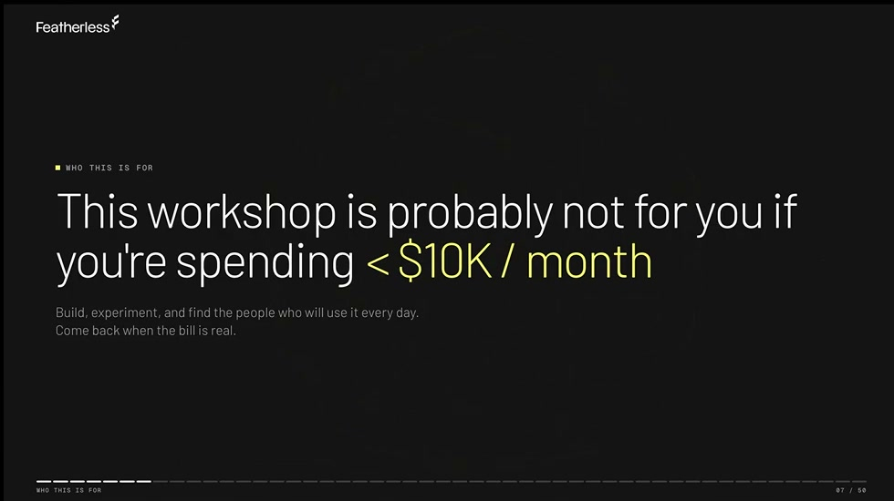
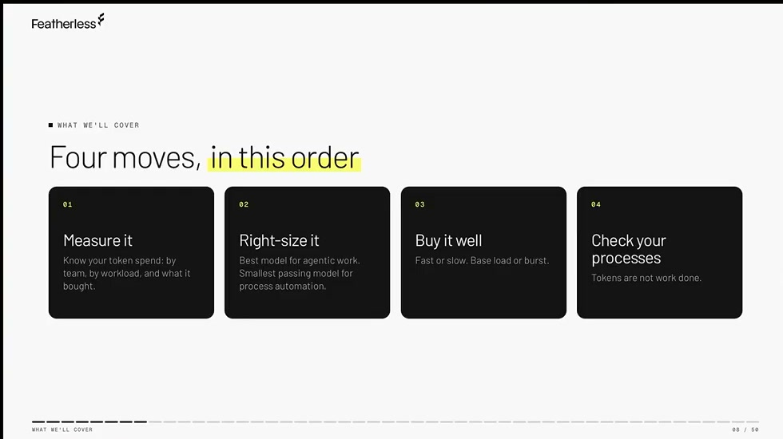
“That's what we mean by scale”00:00:00
- One customer runs two trillion tokens a day for about $60K.
- That price depends on dedicated hardware and very high volume.
- Below roughly $10K a month, find use cases instead of optimizing.
Evidence: transcript 00:00:00
Measure first: one shared key tells you nothing
He asks the room who knows their total token spend, and about half the hands go up. Asked who can break it down by department, about half of those go down, and it keeps falling at team and use-case level. Thirty to forty percent of the customers who come to him start with a single API key shared by the whole organization.
The fix is not specific to any vendor: issue separate keys by department and by major use case. His slide lists four questions a bill should answer. Which team and workload spent it? Was a person waiting for it? What does a week of usage look like? Did the output get used? Each one feeds a later move. He says that if you are not measuring you can ignore the rest of the workshop, because measuring is where the biggest return is.
“a single shared key that every one in the organisation used”00:02:54
- Half the room knew total spend; far fewer knew it by team.
- Split keys by department and use case before anything else.
- Every later saving depends on knowing who spent what, and why.
Evidence: transcript 00:00:00, 00:09:09
Why the bill jumped: five developers, $150K a month
AI workloads come in two kinds with opposite economics. Agentic work is long-running and multi-turn, with context that grows every step; coding agents are the main example. Process automation is short, predefined and isolated, and it is a volume game: call centers, email routing, document processing. One telco he works with peaks at ten million messages a minute, filtered for a child-safety feature, and New Year is the worst day.
The explosion most organizations hit first is on the agentic side. One team he supports had five developers running about eight agents continuously, on Opus through the API. That came to 116 billion tokens and about $150,000 a month. They moved to a single dedicated node running an open model and, by his account, saw no disruption. The slide puts the new cost under $10,000 a month. Knowing the workload also let them move background agents to run overnight, when the hardware was otherwise idle.
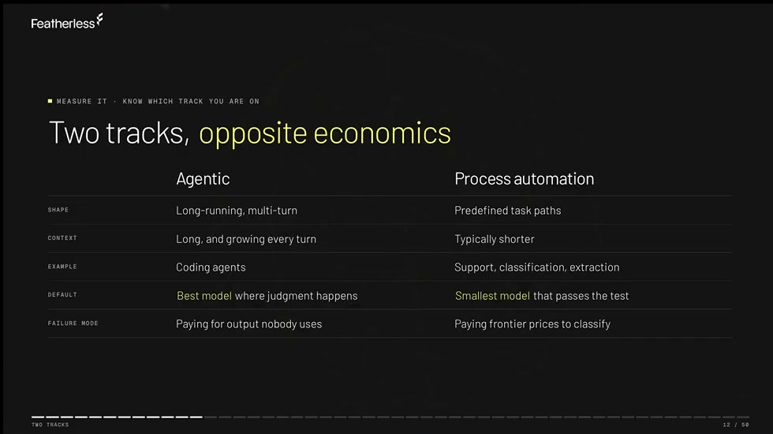
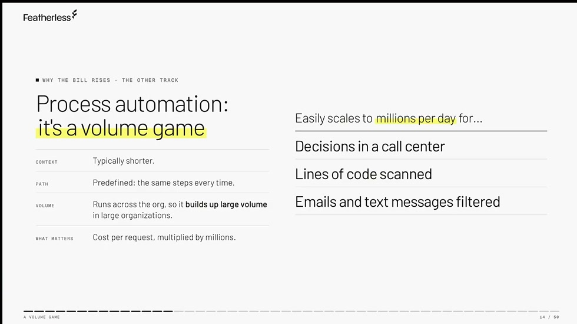
“they were essentially spending like one hundred fifty k a month”00:04:51
- Agentic and process workloads need opposite treatment.
- Agents that run for hours are where usage explodes.
- One five-person team went from about $150K to under $10K a month.
Evidence: transcript 00:00:00
Agents: keep the best model for judgment, and make the cheap one fast
His slide on where an agent's tokens go is the basis for this section. Output is under 1% of the tokens in a coding agent's month; over 80% of the spend is context, re-read at every step. So the price of output matters less than caching and what the worker costs.
The common pattern is to split the work. The best model plans, cheaper and faster models do the implementation, and the best model reviews. Implementation is where the tokens go, in the loop of editing, testing and checking, and he says open models are capable of it.
Getting people to use the cheaper model is the hard part. Where both models ran at the same speed and budgets were loose, nobody switched; the slide says 98% of traffic stayed on the best model. With a faster worker, 87% moved by choice. People feel latency, not the bill. His rule is to make the cheaper model the faster one. A tight budget does the opposite of what you want: the smart model is burned through in a day and then might as well not exist.
Two more controls. Use separate keys for agents a person is watching and for background jobs such as CI, so each can be bought at a different speed. And give departments labels such as "smart" and "fast" instead of model names, so the model behind a label can be changed in one place. Without that, he has found teams still running Llama 2 because nobody changed the setting.
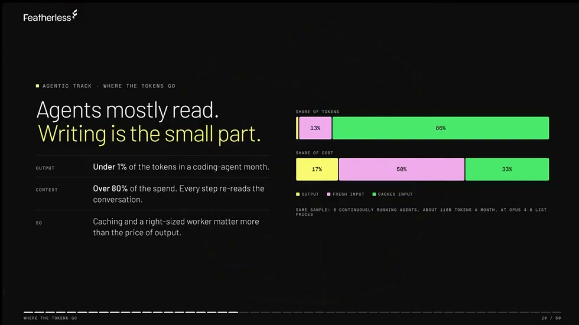
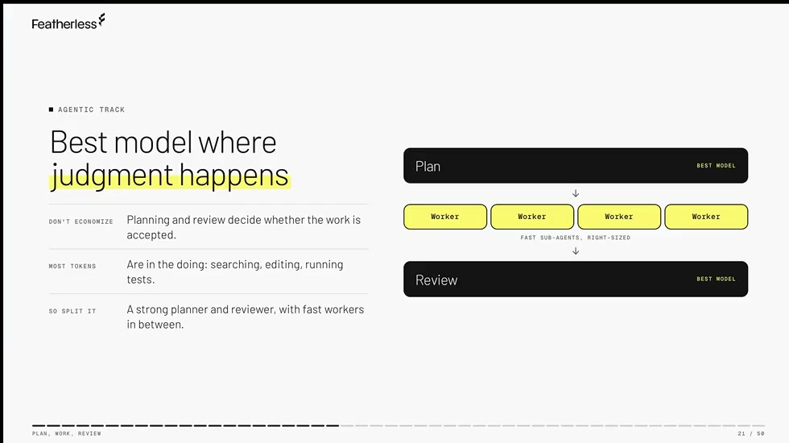
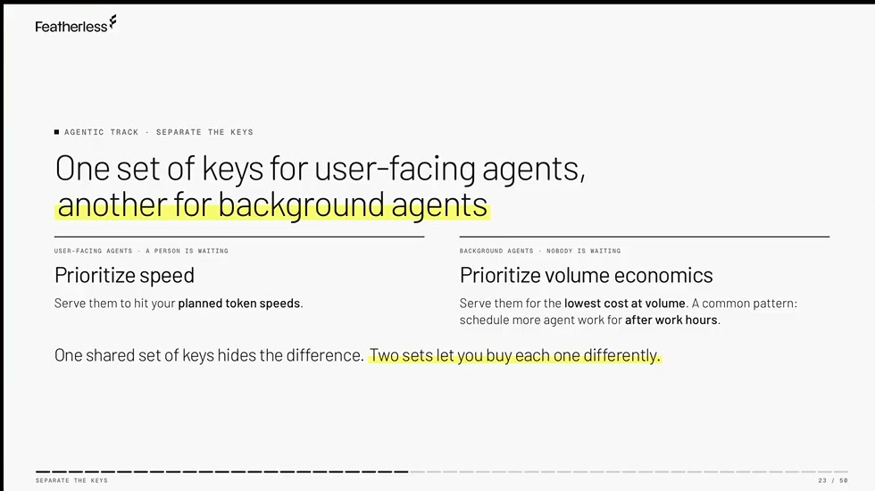
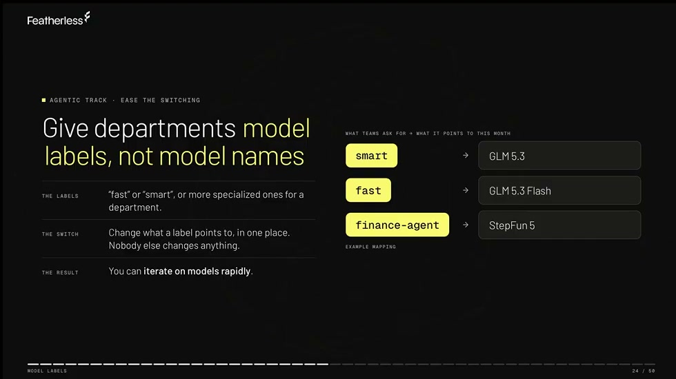
“nobody really switches their model to save the company”00:13:04
- An agent's cost is mostly context it re-reads, not what it writes.
- Best model plans and reviews; fast, cheaper workers do the doing.
- People switch models for speed, never to save the company money.
Evidence: transcript 00:09:09, 00:18:09 · watch the agentic track
Process work: the smallest model that passes your test
His starting image is Maslow's hammer: AI is the new hammer and gets applied to everything, including jobs that need a smaller one or none. The slide sorts tasks into those that need the big model, those a smaller one handles, and those that are not AI problems at all.
Open models have closed much of the gap this year. He has seen them match or beat closed models on specialized benchmarks, including a model about ten times smaller reaching near-frontier quality on financial tasks. His field-guide slide names an open model per job and carries its own warning that it will be out of date within a month.
How do you know a smaller model is good enough? He calls it the wrong question. Write the tests and examples, then search for the cheapest model that passes most of them. One telco went from $250,000 to $7,600 a month this way.
Two further steps follow when volume justifies them. Much of this traffic is classification: the answer is a choice from a list. Classifier models that produce no text are commonly ten times cheaper. And a model can be fine-tuned for the domain, as AT&T did in going from frontier-class models down to 27B and 7B ones. To bootstrap one, run the expensive model at small scale, collect its outputs as a dataset, fine-tune a small model, and shift traffic over. He adds that some labs' terms forbid this, so check. Keep a slice of traffic on the best model as a shadow, to keep building the dataset as models improve.
In the Q&A he puts evals ahead of tuning method. His own prompt-tuned model beat most fine-tuned ones of the same size on a public benchmark.
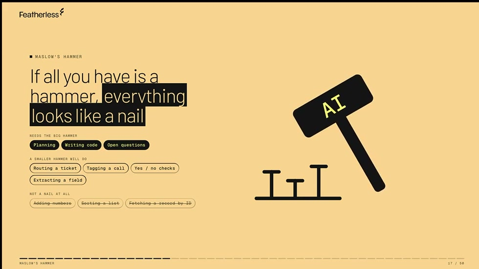
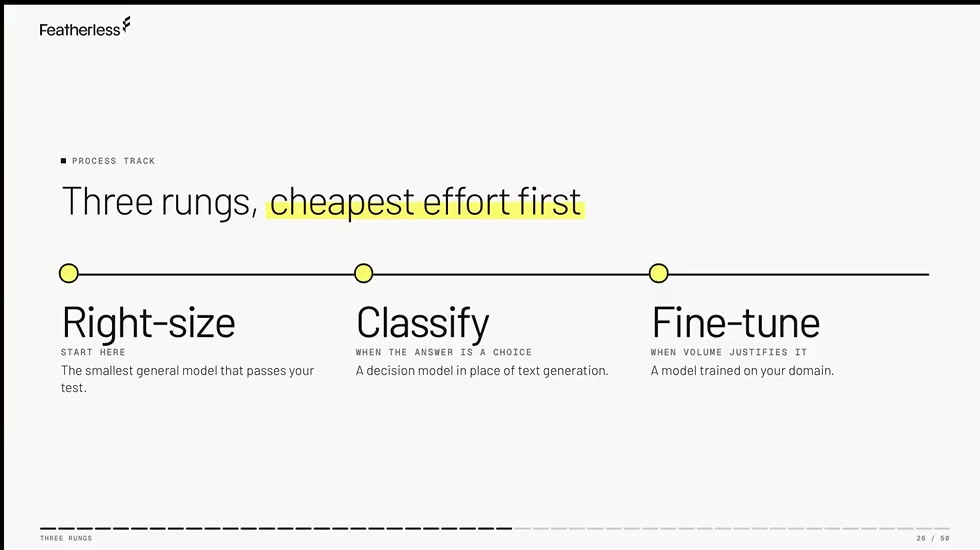
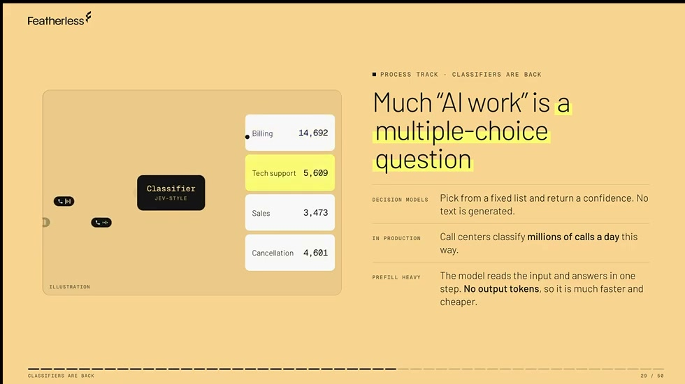
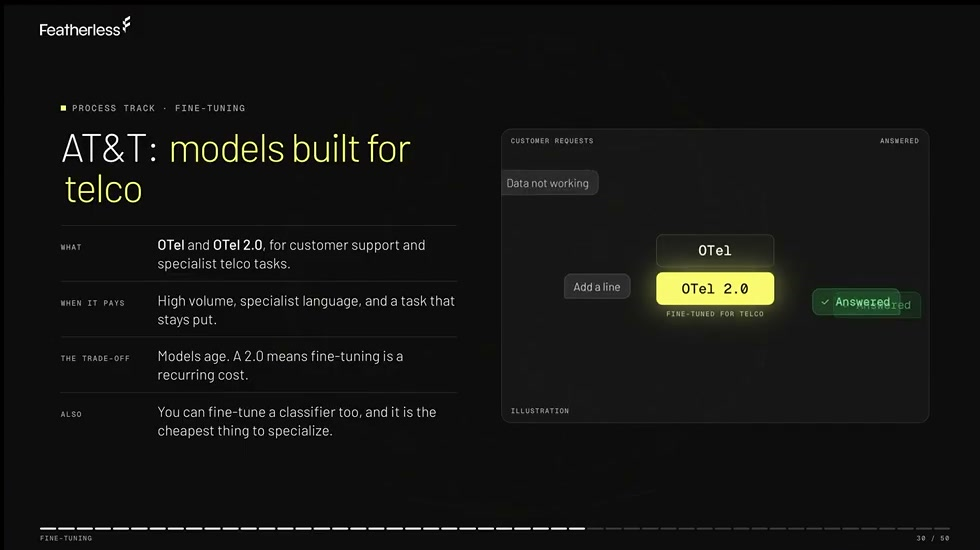
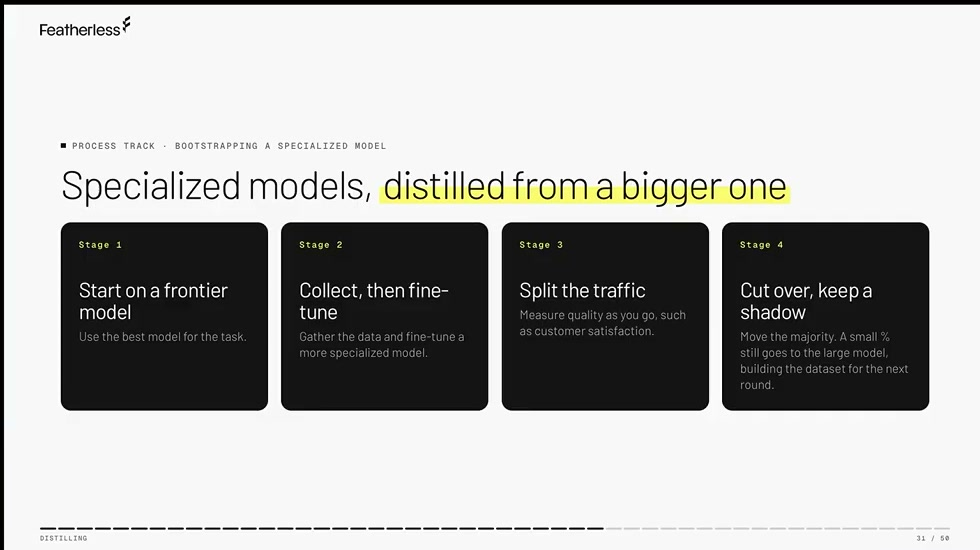
“it's also not that hard to just download ten models from Hugging Face and just try”00:20:26
- Write the test first, then search for the cheapest model that passes.
- A lot of "AI work" is classification, which is far cheaper.
- Distil from a frontier model when volume is high and the task stays put.
Evidence: transcript 00:09:09, 00:18:09, 00:25:11, 00:44:46
Buy it well: twice the speed costs three times as much
Customers are surprised that inference does not scale linearly. There is a steep trade between how fast one request runs and what it costs. His rule of thumb is that every doubling of speed triples the cost.
The same server shows it. One request alone runs fast. Sixteen in parallel each run at about half that speed, but the node's total output rises about tenfold, which he puts at nine to ten times lower cost per token. The slide's figures are 112 tokens a second alone, 64 each when shared, and about 9x lower cost.
So pay for speed only where a person is waiting, a developer or a customer. Most customers pick between 20 and 60 tokens a second, and a small step down can halve the cost with little effect on the user. Background jobs should never run at the fast tier.
Capacity follows the shape of usage. Most traffic is bursty over a base that never goes to zero. Dedicated capacity is the biggest saving available if you know your base load and use it fully; spikes can spill to on-demand.
A Q&A point belongs here. Routing each turn to a different model wrecks the cache unless it is held to two or three models, so he prefers routing by task.
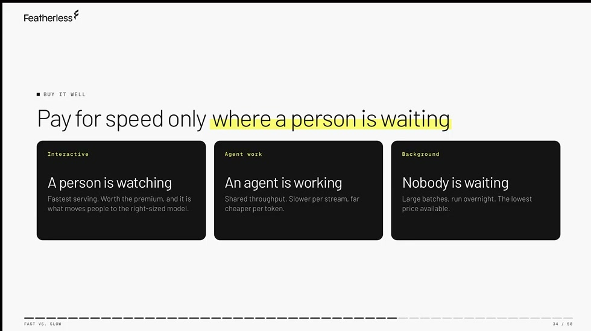

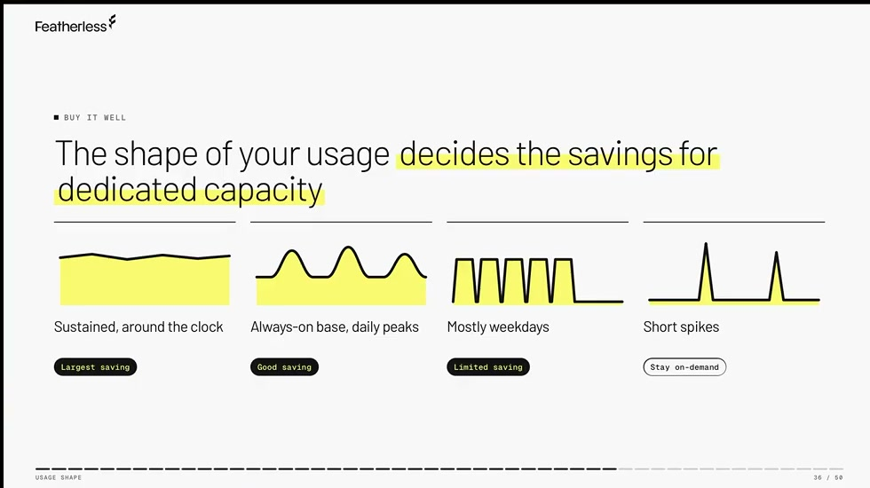
“for every two x of speed, it's three x of cost”00:28:40
- Twice the speed is about three times the cost.
- Sharing a node halves speed per request and cuts cost about ninefold.
- Buy dedicated capacity for the base load; leave spikes on demand.
Evidence: transcript 00:25:11, 00:44:46 · watch the buying section
Tokens are not work done
The last move has nothing to do with inference. Organizations are asking why token spend is up ten or a hundred times without results to match, and he cites reports of productivity gains of six or seven percent. His slide's summary: people get faster, organizations don't. Individuals produce more, but review, CI and trust do not speed up with them.
His example is the slop grenade. Someone has an agent generate a very large change and hands it over. The reviewer cannot process that much code, so they have their own agent work out what matters and rebuild it, discarding the first agent's work. The task has been paid for twice. The same happens with decks and reports generated in one shot and passed around for others to check. His own slides were designed by agents, and he went through every page about thirty times.
His rules are about ownership. Whoever hands something over owns it; a problem in the output is theirs, not the agent's. Measure outcomes instead of usage: tokens times price, divided by outcomes someone used. He flags the measure as flawed, since teams and tasks differ, and falls back on the first move: spend per team, set beside what each team gets done. The slide adds a third rule, pass the smaller thing.
He calls himself an optimist about all of this. Organizations are still working out what to use the hammer for.
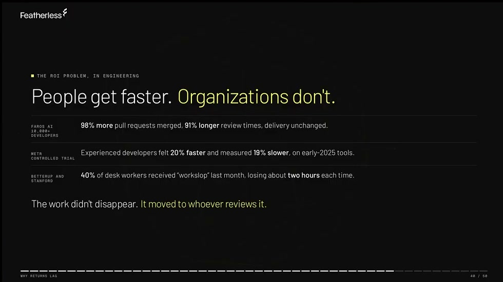
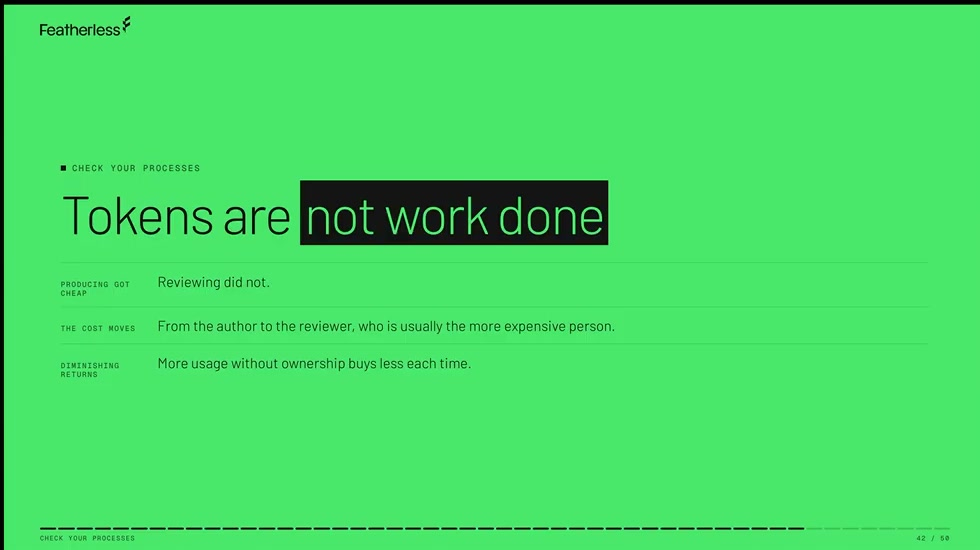
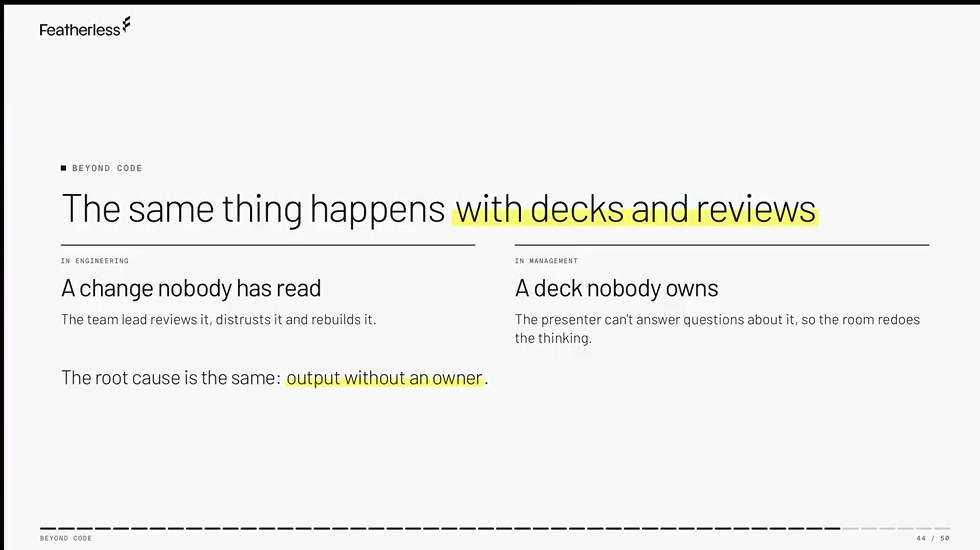
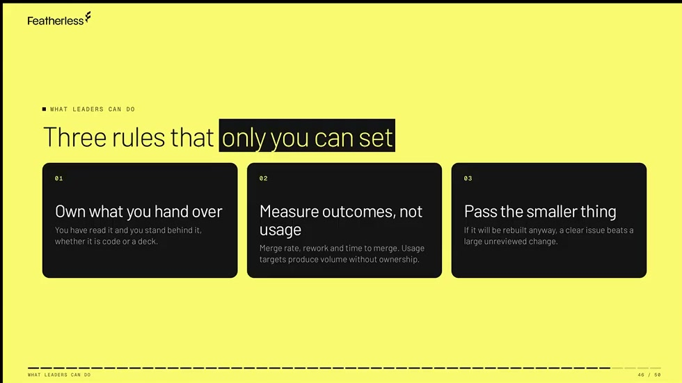

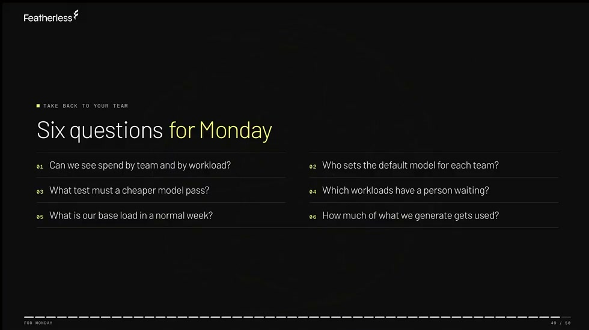
“tokens are not work done”00:34:14
- More output moves the cost to whoever has to review it.
- An unreviewed AI-generated change gets rebuilt, and paid for twice.
- Own what you hand over; count outcomes someone used, not tokens.
Evidence: transcript 00:25:11, 00:34:14 · watch the processes section